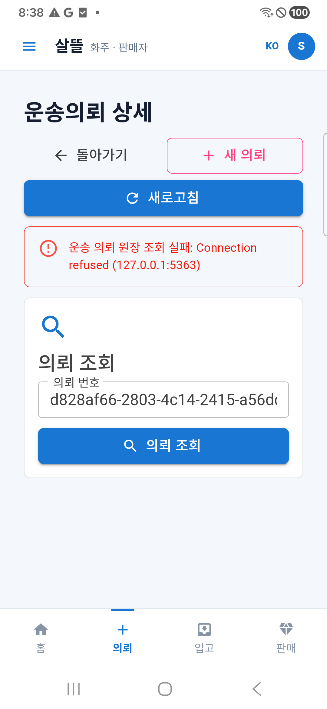
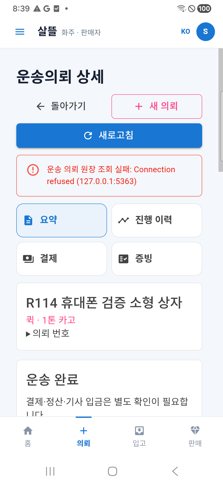
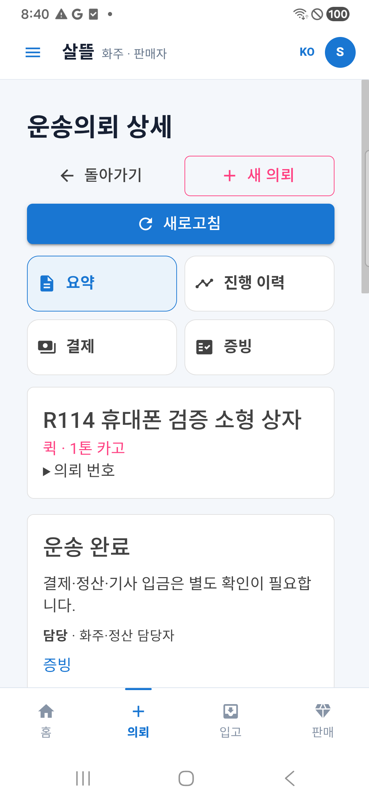
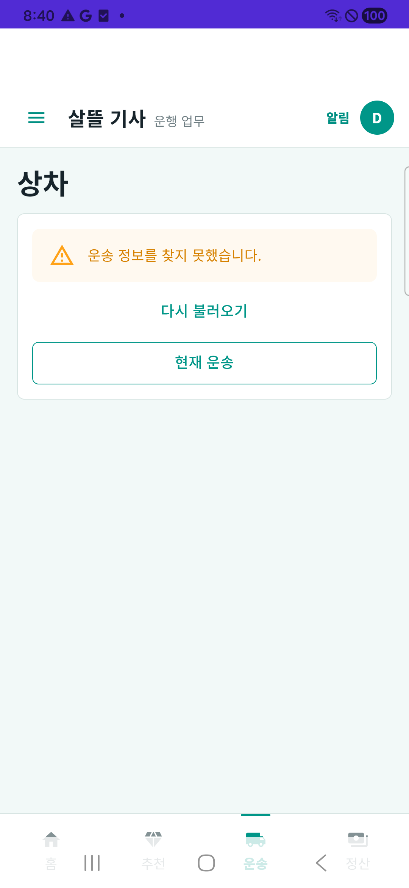

실제 휴대폰 · APK201 · 합성 업무 · 제품 수정 없음통신 실패 → 자동 복구 → 수동 복구와 없는 의뢰 안내를 확인했습니다.
검증 결과·보완 순서 · 촬영 근거
연결 차단 뒤 조회 오류와 복구 행동 표시

정상 운송 카드가 돌아왔는데 이전 연결 오류가 남음

새로고침 뒤 오류가 사라짐

긴 서버 오류 원문이 표시됨
짧은 안내·재조회·복귀 표시, 완료 행동 없음
